Todas as pendências de vários projetos numa só tela, ordenadas por prazo, e uma IA que quebra metas grandes em passos com data.
localhost:5173/
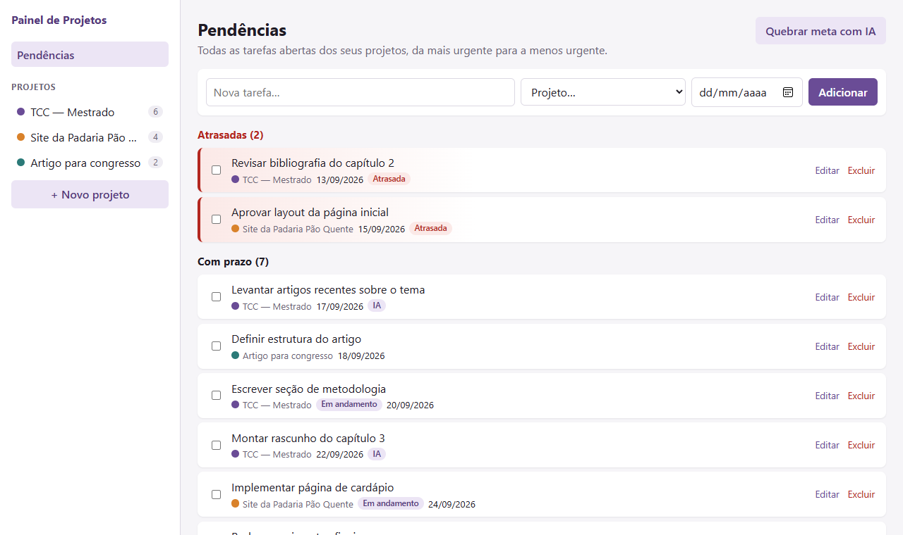
Backend Django 6.1 + Django REST Framework + SQLiteFrontend React 19 + Vite 8IA Claude (API da Anthropic)Código github.com/tutikobi/painel-de-projetos
O problema
“Às vezes eu só lembro que tinha prazo quando já tá em cima.”
Quem toca freelas, mestrado e artigos ao mesmo tempo tem as pendências espalhadas em memória, chat e e-mail, sem uma visão única do que está atrasado. (do rascunho inicial, 00_prompt-inicial.md)
1. Centralizar
Tarefas de todos os projetos numa única lista, da mais urgente para a menos urgente, com as atrasadas em destaque.
2. Planejar com IA
Transformar “escrever o capítulo 3 até dia 30” em subtarefas com prazos, porque a maior dificuldade é decidir por onde começar.
Fora de escopo, por decisão: colaboração multiusuário, e-mail/push, calendário externo, anexos, relatórios.
02 / 20
Como foi construído
Primeiro a intenção, depois o código
00_prompt-inicial.mda ideia em rascunho
constitution.mdregras que não se negociam: stack, segurança, papel da IA
spec.mdhistórias H1–H6, critérios de aceitação, casos extremos
plan.mddecisões técnicas e dependências justificadas
tasks.mdtarefas ligadas a cada história
código + testesbackend, frontend, navegador, CI
RELATO.mdo que mudou e por quê
Regra que guiou o trabalho: mudou de ideia no meio da implementação? A spec e o plano são atualizados antes do código. Nada de ajuste silencioso. A revisão crítica dos artefatos está em ANALISE.md.
03 / 20
Arquitetura
Duas partes que rodam juntas
navegador
React (SPA)
As telas. Guarda o login só na memória da aba.
→/api JSON + JWT
:5173 · Vite
Servidor de desenvolvimento
Entrega as telas e repassa /api ao backend (sem CORS).
→proxy
:8000 · Django REST
Backend
Login, projetos, tarefas e serviço de IA. SQLite como banco.
HTTPS · só a partir do backend
API da Anthropic (Claude)
Recebe apenas a meta e a data de hoje. A chave nunca sai do servidor.
Sem o backend, nada funcionaA tela abre, mas o login falha. São dois terminais.
Cada usuário vê só o que é seuTodas as consultas filtram pelo usuário logado.
IA é complementoSem ela, todo o resto continua funcionando.
04 / 20
H6Autenticação
Entrar e criar conta
Criar conta pede usuário único e senha que passe nas regras do Django: mínimo de 8 caracteres, não só números, não comum.
Exemplo: a senha 123 é recusada com a regra que falhou, como mostra a tela ao lado.
Toda rota de dados exige login: sem token, a API responde 401. Dados de outra pessoa respondem 404.
O token fica só na memória da aba (regra da constituição: nenhum token em texto plano). Por isso F5 pede login de novo.
/login · entrar
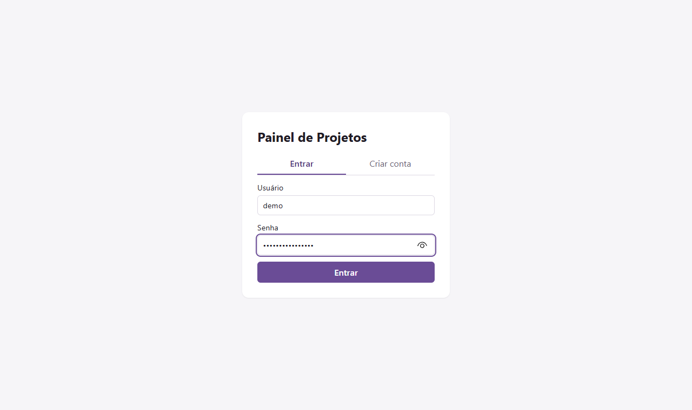
/login · criar conta
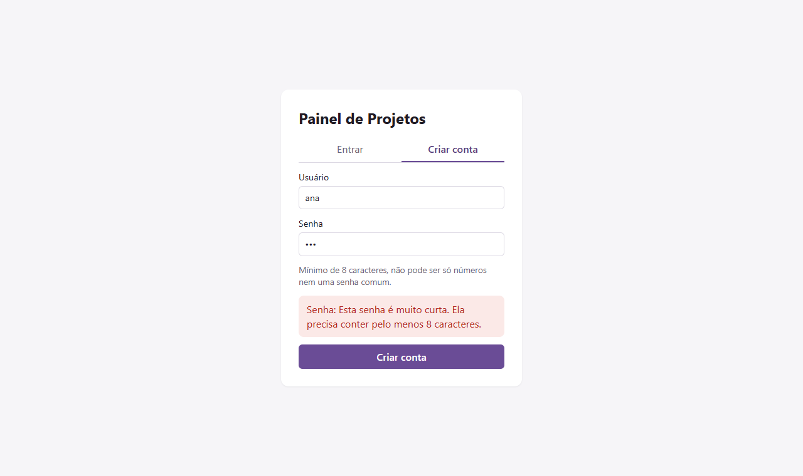
05 / 20
H1Projetos
Um projeto por cliente, curso ou pesquisa
+ Novo projeto na barra lateral: nome, descrição curta (até 280 caracteres) e uma cor para reconhecer de relance.
O projeto aparece na hora na barra lateral e no seletor de “Nova tarefa”, sem recarregar.
Ao lado de cada projeto, a contagem de tarefas.
Dois projetos com o mesmo nome são permitidos: a spec trata isso como comportamento aceitável.
localhost:5173/ · barra lateral
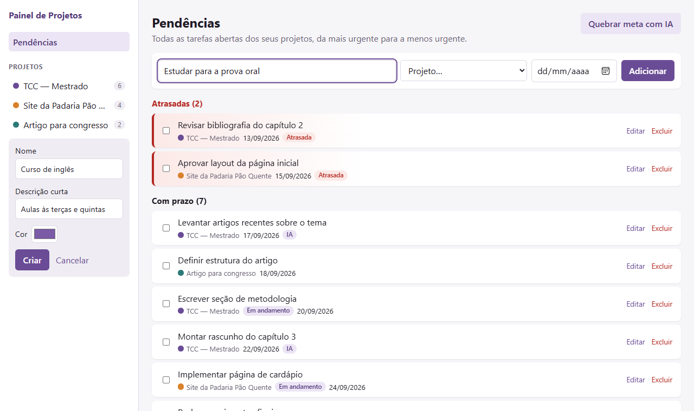
06 / 20
H2Visão central
O que priorizar, sem abrir projeto por projeto
Três seções: AtrasadasCom prazoSem prazo. Tarefa sem data nunca se mistura às datadas.
Ordem por prazo, da mais urgente para a menos urgente. Empate: a mais antiga primeiro.
Exemplo: “Revisar bibliografia do capítulo 2” venceu em 13/09 e aparece no topo, com borda vermelha e selo “Atrasada”.
A tela inteira vem de uma chamada: GET /api/tasks/?status=todo,doing, e não uma por projeto.
localhost:5173/ · Pendências
07 / 20
H5Tarefas
Criar, concluir, editar, excluir
Criar: título, projeto e prazo opcional. Prazo no passado é permitido (registro retroativo) e a tarefa já nasce “Atrasada”.
Concluir: marcar a caixinha tira a tarefa das pendências. Ela continua visível no kanban, em “Concluído”.
Editar: título, prazo e projeto. Mudar a data move a tarefa de seção. Só dá para mover para projetos seus.
Excluir: sempre pede confirmação.
localhost:5173/ · editando uma tarefa
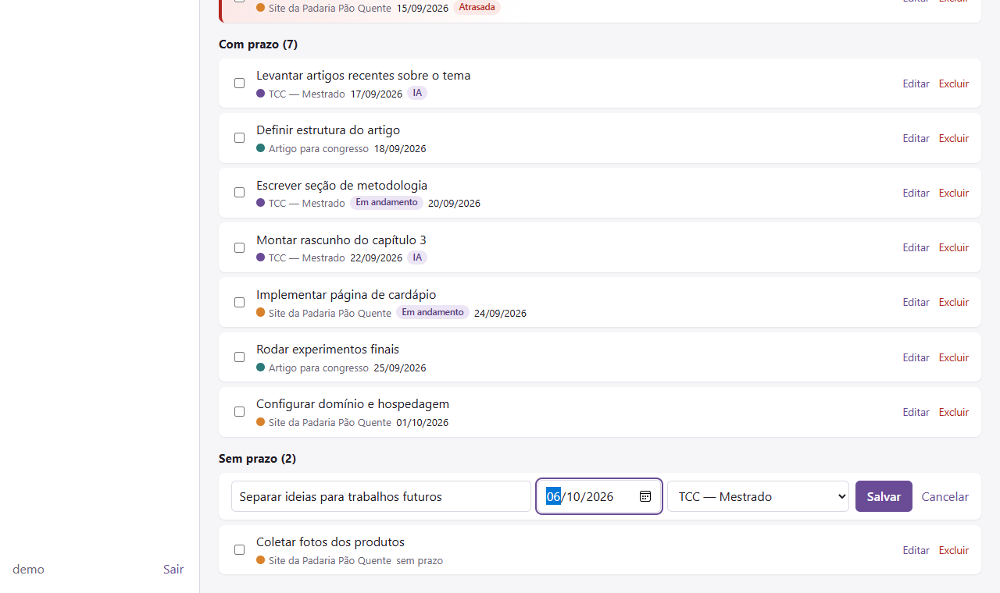
08 / 20
H3Kanban por projeto
Arrastar entre colunas grava no servidor
Colunas A fazer, Em andamento e Concluído, só com as tarefas daquele projeto.
Soltar o card em outra coluna muda o status na hora e grava com PATCH /api/tasks/{id}/.
Se a gravação falhar, o card volta para onde estava e aparece uma mensagem de erro.
Voltando em “Pendências”, a mudança já está lá, sem recarregar a página.
O selo IA marca tarefas criadas a partir de sugestões.
localhost:5173/projects/1 · TCC — Mestrado
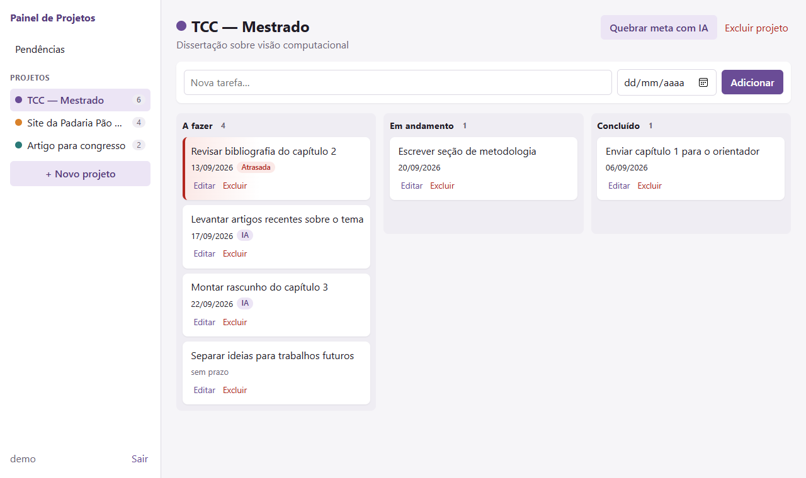
09 / 20
H4Quebra de meta com IA
O que a IA faz: transforma uma meta vaga em passos com data
Você escreve (hoje: 16/09/2026)“Escrever o capítulo 3 da dissertação até dia 30”O backend envia ao Claudea meta + Data de hoje: 2026-09-16 (quarta-feira). Nome e descrição do projeto não saem do servidor.
Reler anotações e artigos do capítulo 218/09
Definir estrutura e subseções do capítulo 319/09
Escrever a seção 3.1 (fundamentação)22/09
Escrever a seção 3.2 (método proposto)25/09
Revisar texto, figuras e referências28/09
Enviar o capítulo 3 ao orientador30/09 · prazo final
exemplo ilustrativo A resposta real muda a cada chamada.
De 3 a 10 subtarefas, na ordem de execução.
Datas reais, distribuídas até o prazo final, nunca depois.
“Até dia 30” = a próxima vez que o dia 30 chegar.
Meta sem prazo → subtarefas sem data. A IA não inventa datas.
10 / 20
H4O caminho de uma meta
A IA sugere; quem decide e grava é você
A constituição dá à IA uma única responsabilidade: sugerir. Ela nunca cria, edita ou exclui tarefa sozinha.
Modelo claude-opus-5 (configurável), resposta em JSON com formato obrigatório, espera máxima de 60 s. Sugerir e gravar são dois endpoints separados: /api/ai/breakdown/ e /api/ai/breakdown/confirm/.
O painel verifica se a chave existeGET /api/ai/status/ responde só verdadeiro ou falso
Você escolhe o projeto e escreve a metameta vazia ou com mais de 1000 caracteres é recusada antes de gastar uma chamada
O backend chama o Claudecom a meta e a data de hoje, pedindo JSON com título e prazo
O backend confere a resposta com rigorde 1 a 20 itens, títulos não vazios, datas AAAA-MM-DD válidas. Fora disso é erro; nada é “consertado”
Você revisaedita, remove, adiciona ou descarta tudo
“Adicionar ao projeto” gravasó agora as tarefas entram no banco, com o selo IA
11 / 20
H4Pedindo sugestões
Painel lateral que não trava a tela
1 · meta escrita IA simulada
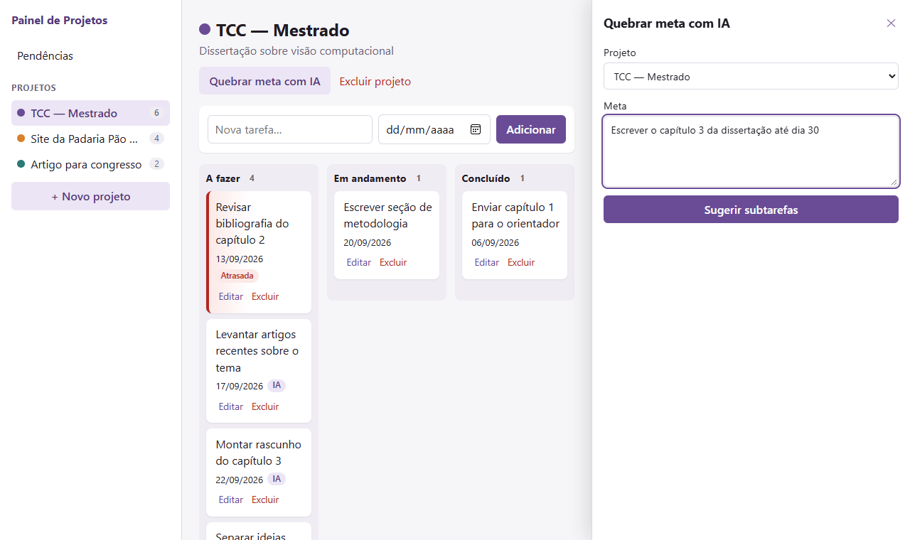
2 · aguardando a IA IA simulada
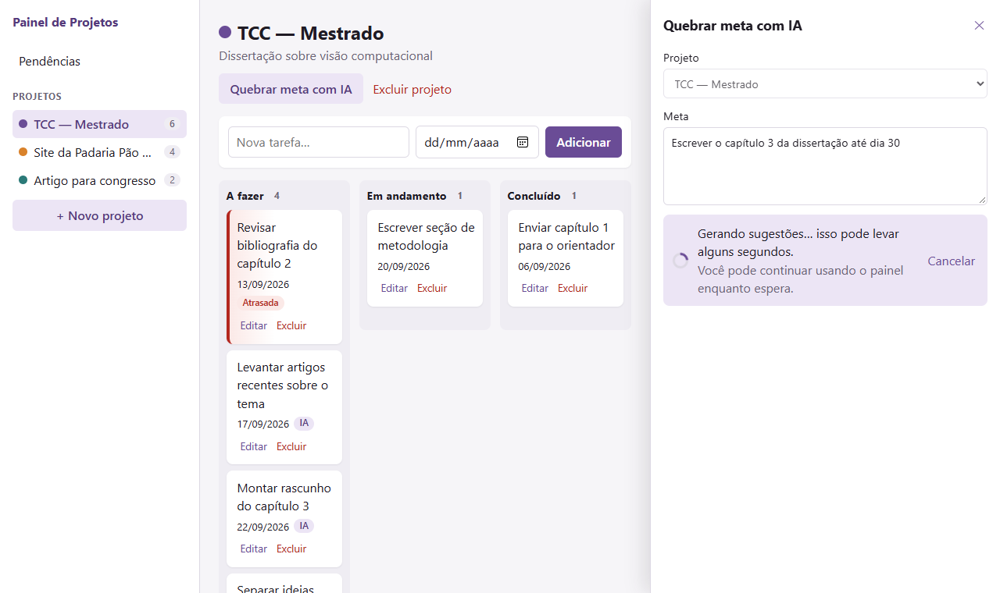
Enquanto espera, dá para continuar usando o kanban e criar tarefas: o painel abre espaço na página em vez de cobri-la.
Cancelar descarta a espera. A chamada já iniciada no servidor termina e não grava nada.
12 / 20
H4Revisão antes de salvar
Nada é gravado até “Adicionar ao projeto”
3 · lista editável IA simulada
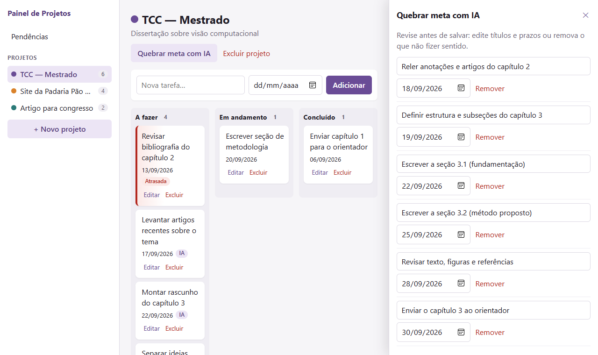
4 · depois de confirmar
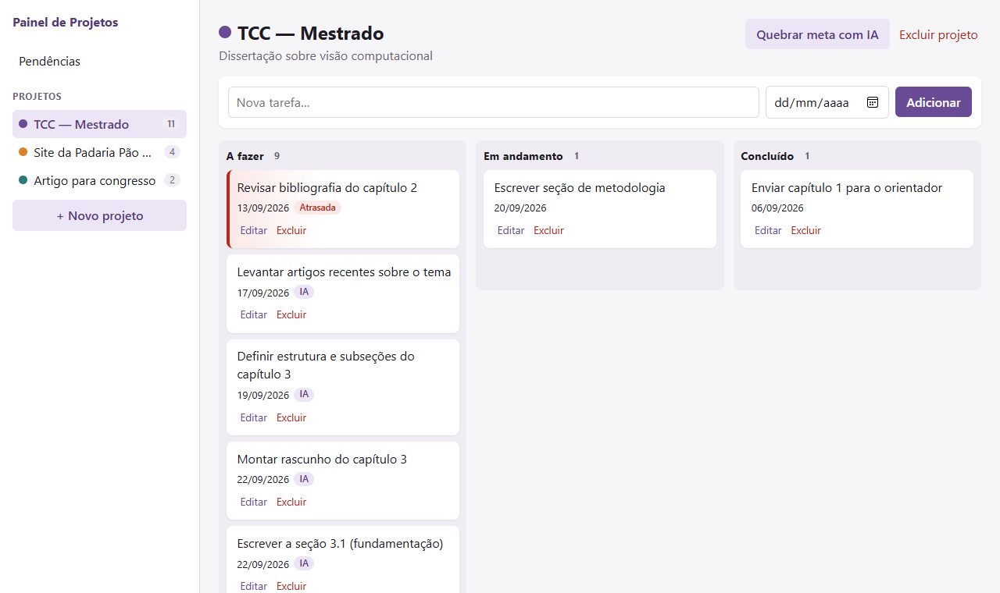
Cada sugestão tem título e prazo editáveis, além de Remover. Também há + Adicionar subtarefa e Descartar sugestão.
No exemplo, a primeira sugestão foi removida: só as outras cinco entraram no kanban, com o selo IA.
13 / 20
H4Sem chave cadastrada
Aviso claro, e o resto continua funcionando
⚠ Chave da API do Claude não cadastradaPor isso não é possível executar esta ação de IA.
Situação
O que a pessoa vê
API
Sem chave no servidor
Esse aviso, ao abrir o painel, com o botão desabilitado
503
Meta vazia
“Descreva a meta antes de pedir sugestões.”
400
Rede, recusa ou resposta fora do formato
“Não foi possível gerar sugestões agora…”
502
Deu certo
Lista para revisar
200
localhost:5173/projects/1 · servidor real, sem chave
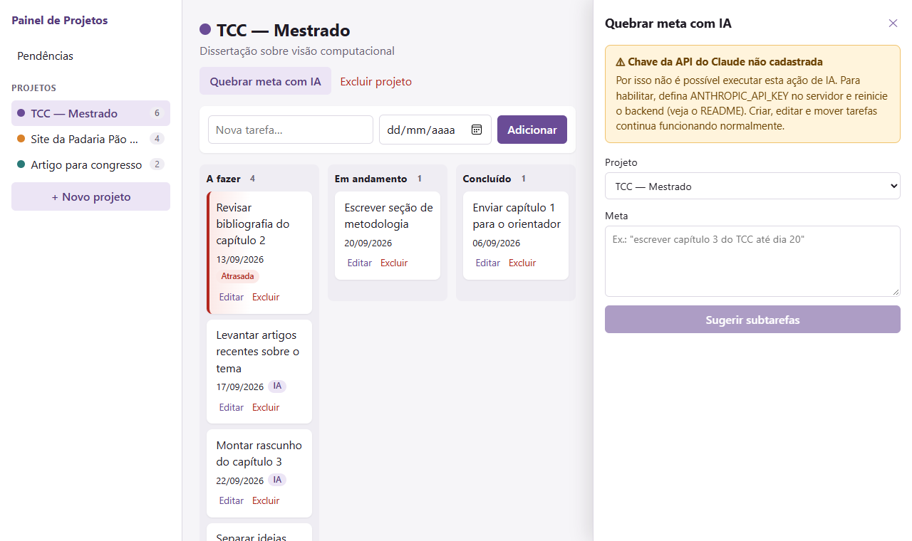
14 / 20
Casos extremos da spec
Excluir projeto em duas etapas
1ª etapa: a tela pergunta ao servidor quantas tarefas cairão junto (DELETE …?confirm=false só conta, não apaga).
2ª etapa: só depois do “OK” o projeto é excluído, com as tarefas em cascata.
localhost:5173 dizEste projeto tem 6 tarefas. Excluir mesmo assim?
OKCancelar
Reprodução da janela nativa do navegador, que não aparece em capturas de tela.
400 px de largura
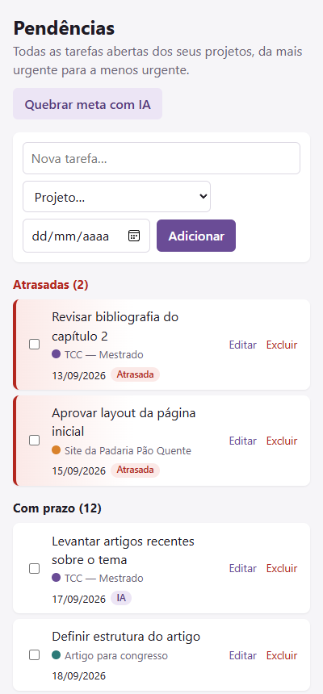
15 / 20
Constituição · segurança e privacidade
Cada regra tem um jeito de ser conferida
Toda rota de dados exige loginteste percorre todas as rotas sem token e espera 401
Ninguém vê dado de outra pessoatestes de leitura, edição e exclusão cruzada respondem 404
A chave da IA nunca chega ao navegadorstatus responde só verdadeiro ou falso; teste confere que o valor não vaza
Descrições e metas fora dos logstestes capturam todos os logs e procuram o texto sensível
Senha só com hash do Djangoteste confere que a senha gravada não é o texto digitado
Nenhum token salvo em texto planotokens só em memória; o roteiro no navegador confere que F5 pede login
16 / 20
Qualidade
Testado em três camadas, a cada push
100testes da API (pytest-django), com a IA sempre simulada
78testes do frontend (Vitest + Testing Library), simulando cliques e digitação
24verificações no navegador real, história por história (H1–H6)
GitHub Actions roda tudo numa máquina limpa: black, migrations, pytest, ESLint, Prettier, Vitest, build e o roteiro no navegador.
Problemas reais que os testes encontraram
O painel de IA cobria o botão “Adicionar” e uma coluna do kanban.
Quando concluir uma tarefa falhava, a mensagem de erro sumia antes de aparecer.
Sem chave, o SDK da Anthropic gerava erro 500 em vez de um aviso tratado.
Na revisão da IA, títulos longos ficavam cortados no painel estreito.
17 / 20
Spec viva · registrado em RELATO.md
O que mudou durante a implementação
constituiçãoRenovação de token liberada sem login
Ela exige o refresh token, que já é uma credencial.
spec H6F5 pede login
Consequência de não guardar token em lugar nenhum.
planoCORS trocado por proxy do Vite
Uma dependência a menos, mesmo resultado.
plano“Modal” virou painel lateral
Um modal travaria a tela, contrariando o requisito de desempenho.
specAviso de chave não cadastrada
Antes, sem chave, aparecia a mesma mensagem genérica de falha.
tarefasT2.7 e T2.8 adicionadas
Nenhuma tarefa de frontend cobria H1 e H5.
18 / 20
Com honestidade
Limitações conhecidas
A chamada real ao Claude não foi exercitada. Não havia chave durante o desenvolvimento. O caminho sem chave foi testado de ponta a ponta. O caminho com sugestões foi testado com respostas simuladas no formato que o código exige. É o primeiro ponto a validar com uma chave.
F5 exige novo login. Sessão persistente exigiria emendar a constituição (por exemplo, cookie HttpOnly).
A ordem dentro da coluna do kanban é sempre por prazo. Não há reordenação manual.
Configuração só de desenvolvimento: não há deploy, Postgres nem servidor de arquivos estáticos.
As sugestões da IA não são reprodutíveis: um modelo de linguagem responde diferente a cada chamada. Por isso nenhum teste depende delas.
19 / 20
Para testar
Dois terminais e um usuário pronto
Usuário demoSenha Painel-demo-2026
seed_demo cria 3 projetos e 12 tarefas com prazos relativos ao dia de hoje: sempre há atrasadas, próximas, sem prazo e vindas de IA.
Requisitos: Python 3.12+, Node.js 22.22.2+ ou 24.15+, Git. Chave da Anthropic é opcional.